What is new in WinBoard / XBoard 4.7.0?
|
Some engines allow the user to restrict the moves searched in the root position to a subset of all legal moves.
XBoard now provides an interface for the user to indicate which moves should be excluded.
The method used is to enter the move starting with a double-click on the piece.
So either double-click from-square, and then click to-square,
or grab the piece with a double-click,
and then drag it to the to-square before you release for the second time.
In the latter case there will be an visual cue to remind you that you are not really making the move,
namely that the piece you start dragging will also remain on the from-square.
The first time you make a move that way in analysis mode,
it will be excluded from the analysis of the current position.
A new command had to be added to WB protocol to make this possible,
and that command ("exclude MOVE") will be sent to the engine.
The move will be highlighted in premove highlight colors (normally red).
When you enter an excluded move in the double-click way again,
its exclusion is cancelled (through sending "include MOVE" to the engine),
and the move will remain highlighted in the normal highlight color (yellow).
You can currently also exclude all moves but the best at once by
double-click dragging a piece (vertically) off board.
This is not likely to stay;
the final version of this feature will probaly provide another method for this.
|
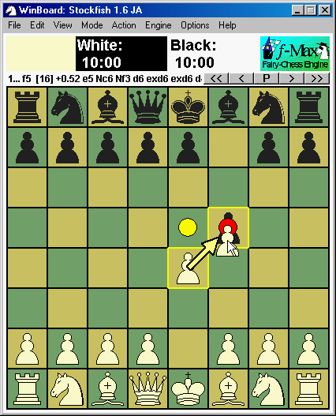
|
During analysis there now is an extra header line in the engine Output window,
which lists the moves that have been included from analysis, with a '-' sign in front of them.
By right-clicking these moves, they get re-included, and the '-' changes into a '+'.
They do stay listed, (as long as you remain in the position), so you can easily
toggle their exclusion state this way.
|
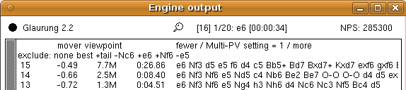
|
The exclude header always also contains the items 'none', and 'best',
which you can right-click to completely reset the exclusion list,
or exclude the current best move (i.e. the first move of the latest reported PV), respectively.
Finally, a pseudo-move 'tail', representing all moves not listed explicitly in the header,
is always shown as well.
It excludes or includes all these remaining moves.
a special case is when clicking it would result in no moves being included at all;
in that case the current best move will remain included.
|
A new WB protocol command "setscore SCORE DEPTH" has been defined,
which can be used to set the score an engine should use for a given position by hand.
Currently XBoard does not use this yet,
but the intention is to allow the user to use the Adjudicate items in the Action menu
to define the current position as a win, loss or draw.
Like WinBoard, XBoard now also has the possibility to display player logos next to the clocks.
To enable this feature, an option -logoSize was added to XBoard.
This specifies the width (in pixels) of the logo pixmaps.
(The height is always assumed to be half the width.)
When the value of this option differs from the default 0, and is not more than 1/4 of the board width,
XBoard creates space for the logos, by displaying the clocks as two lines.
Commonly used logo sizes are 100 x 50 or 130 x 65.
|
Like in WinBoard, a new boolean option -autoLogo causes XBoard to automatically look for logos corresponding
to the playing engine, human player, or the ICS to which you are connected.
Unlike WinBoard, you can specify a directory where XBoard looks for the logos, with the new -logoDir option.
All these options are persistent.
The name of the logo files must be the 'tidy name' of the engine (also used as mnemonic in the Load Engine dialog),
or the domain name of the ICS, or user name of the human, suffixed by .xpm,
for XBoard to recognize them under -autoLogo.
The logos can also be specified explicitly (overruling the -autoLogo choice),
with the volatile options -firstLogo, -secondLogo.
|
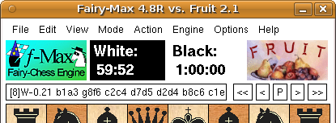
|
XBoard now has chat facilities a bit similar to WinBoard's chat boxes.
Only difference is that there is only a single window to contain all chats (upto 5),
which cannot be 'unstacked' to see the chats side by side.
You can only see the 'foreground chat',
with the person (or channel) that is written in the chat-partner field at the upper left.
The other chats are only represented by buttons in the top row.
If there are messages in those chats you have not seen yet, the corresponding button turns orange.
|
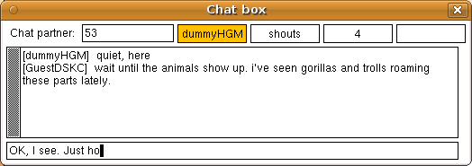
|
Clicking a button moves the handle (or channel) it mentioned to the chat-partner field,
so that the corresponding chat becomes foreground, and rearranges the buttons.
You can then type to that person or channel (or shout, or whisper) without having to prefix the messages with 'tell ...', 'shout' or whatever.
XBoard will do this for you, depending on what is in the chat-partner field.
At any time you can change the content of that field (terminated by <Enter>!),
to change with who you are chatting.
This is also the way to create new, simultaneous chats:
initially all buttons are blank; just select one
(so the chat-partner field gets cleared, and the old partner moves to one of the buttons),
type a new handle there, and you can chat to that person.
|
|
There were two XBoard dialogs that used listboxes:
the game-list window, and the game-list options dialog.
The first of those was more complex, because it could grow very big,
and was thus mounted inside a 'viewport', enabling the user to scroll through it.
The code for viewport + listbox has now been incorporated into the generic popup,
by creation of a new option type 'ListBox'.
As a result, these windows can now be generated by this dialog creator too,
meaning that they can also draw on all features this creator already supported.
But, even more importantly, it makes it trivial for other dialogs to use listboxes as well.
The code has been a bit augmented as well:
a callback has been added to allow vertical scrolling of such generically generated listboxes with the mouse wheel.
This scrolling can also be activated from the code,
which is now used in the game list to always keep the selected item in view.
|
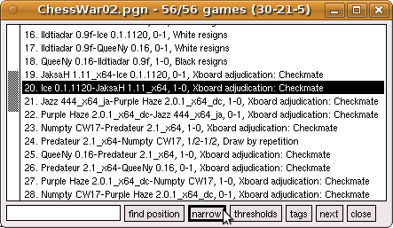
|
There are three ways to select a subset from the game list:
you can filter on a substring of the header lines (e.g. a player name),
set thresholds for Elo and date in the Load Game dialog,
or select on a position occurring in the game.
All three methods can be used simultaneously.
But sometimes you might want to select based on two positions.
This can now be done with the new 'narrow' button in the game list:
unlike 'find position', which starts a search with a clean slate
(taking text and Elo/date filters into account),
this only selects from games that were already selected in the list.
This way you can select for position after position,
e.g. games that started with 1.e4 (using 'exact match'),
where white castled Q-side (in 'subset mode' with only Kc1 and Rd1 on the board),
black castled K-side (again subset mode, with Kg8, Rf8 on an otherwise bare board),
and ended in a Rook ending (in 'material range' mode with KRKR on the lower board half,
and all Pawns on the upper board half).
After using 'narrow' three times (after the initial 'fiind position',
you are left with only the games that satisfied all these conditions.
Another improvement of the dialogs generated by the generic dialog creator
is that text-edits now interpret a <Tab> character typed by the user as the command to transfer focus
to the next text-edit of the dialog.
This allows you to avoid the annoying switching between keyboard and mouse when completing the info of a large dialog,
like Match Options.
The program code for the XBoard user interface has been extensively rewritten,
so that all dialogs, including the main board, are now managed by a completely general
'generic popup' routine, whih is entirely table driven.
Many of the specific improvements listed here are a consequence of this,
and the ease with which listboxes and graphical elements can be added to dialogs
will no doubt enable many future improvements.
In addition it should make it much easier to port XBoard to other platforms.
The comboboxes for selecting engines in the Load Engine and Match Options dialogs have been replaced by listboxes.
This allows faster selection of the engines, because you don't have to open the comboboxes first.
The latter was especially annoying when you needed to select a number of consecutive items from a long list for a tourney:
you would have to reposition to where you were for each engine you added.
Now you simply double-click the engines, without the mouse pointer having to move elsewhere in between.
There are now also separate dialogs for loading first and second engine,
so the combobox to choose this could be removed,
as you already make the choice by selecting the appropriate dialog from the menu, without extra mouse click.
|
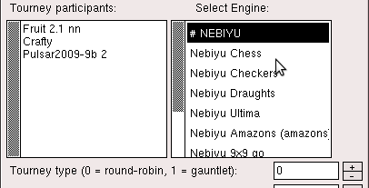
|
Grouping of engines is now also possible in XBoard.
The fact that the engines are presented in listboxes makes this extra handy.
Just double-click a group to see it open, with its name displayed as header,
and click on that header to close it again, and go back to the 'root' list.
As with WinBoard, the engines in a group are dlimited by lines
"# GROUP NAME" and "# end" in the engine list.
|
|
The main window is rather complex, not so much because of its layout and the type of widgets it contains,
but because the widgets have all kinds of activity on clicking.
In particular there are the pull-down menus of the menu bar,
and various pop-up context menus on clicking the board (piece menu, drop menu).
The generic dialog creator already contained code to generate menus, though, for ComboBox options,
and the control elements for those are nothing but a one-menu menu bar, with a text-string written in front of it.
This code was easy to re-use to do the main menu bar, as well as for creating pop-up menus.
A new level of organization makes it possible to 'box' the menu buttons (or other controls) into a menu bar
(which is also used for the button bar).
The fact that the board can now be handled by XBoard's generic popup made it easy to add a second board window.
So with the ICS options 'Background Observe' and 'Dual Board' both on,
a game you are observing next to the game you are playing will now be displayed in a separate window,
rather than side-by-side with your own game in a single, double-width window.
The new window also contains its own clock and message field.
(But no menus or button bar, and it will also not react to any clicking on it.)
|
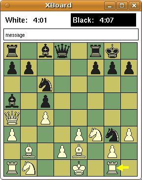
|
|
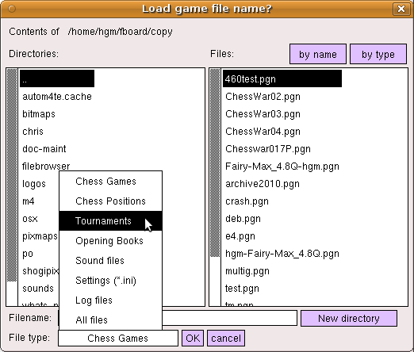
|
XBoard so far relied on a file browser borrowed from GhostView,
which was of a bit peculiar design,
while the adaptations made in it to interface it to XBoard had made it a bit flaky.
The file browser therefore has been completely rewritten,
using XBoard's generic dialog generator, and its newly supported list boxes.
The new design has two (scrollable) list-boxes, one for the folders and the other for the files in the current directory.
It also has a combobox to select the type of file we are browsing for.
By this we can filter on the usual extensions for the various file types,
such as .pgn for games, and .fen for positions.
Double-clicking on entries in the folder list enables you to navigate through the file system.
Double-clicking on an entry in the file list will select the file.
Depending on if you were browsing for actually accessing it
(e.g from the Load Game menu)
or just to get the name
(as with the Browse buttons of another dialog),
this will open the file, or put the name in the text-edit you were browsing for.
Of course you can still type the filename by hand
(if you need a non-existing file, for saving on).
In that case the the browser can still be helpful,
because it prepends the path name of the currently selected folder to the filename you type.
When browsing for a path, that is the only thing it will copy to the text-edit.
|
In Edit Position mode it has always been possible to move pieces from any square to any other square.
New is that you can now also do this while keeping the Ctrl key pressed.
This then moves the piece withot removing it from the original square,
i.e. it becomes a 'copy' rather than a 'move' operation.
This can be helpful for setting up a Pawn chain.
|
In Analysis mode, XBoard can now run two engines at once.
Like when playing engines against each other, the Engine-Output window will then be split into two panes,
and the output of the second engine will appear in the lower pane.
Both engines will analyze the same position,
following the game as the user browses through it by means of the stepping buttons,
or by entering moves.
They will also exclude the same moves from the analysis, so only the upper pane
will have a move-exclusion header line.
Each pane will have its own Multi-PV header line, however,
(if the corresponding engine supports multi-PV),
so that you can independently set the number of PVs coughed up by each engine.
Normally analysis will start with only a single active engine, the first.
Clicking the "Analysis Mode" menu item when already analyzing,
this will toggle the second engine on and off.
Of course the second engine will be switched off as soon as you leave analysis mode, just like the first.
|
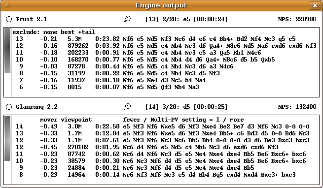
|
The Analyze Game menu item has acquired some new functionality.
Used when a game is already loaded, it will start to auto-play the game,
starting at the current position,
and annotate it with scores and engine variations, like always.
When reaching the end of the game, auto-play will stop,
but the game stays loaded for you to add more comments,
and save it by hand to a file of your choice.
But when you load a new game from a multi-game file
(by selecting it from the Game List)
while Analyze Game mode is already switched on,
(or when the "Step through opening lines / positions" in the Tournament dialog has been selected),
auto-play will no longer stop at the end of a game!
In stead, it will automatically load the next game from the file,
(forcing a save of the just annotated one, if you have set auto-save mode properly),
and start auto-playing / analysing / annotating that.
This will continue untill all games in the file have been treated,
or you switch XBoard out of Analyze File mode by hand.
|
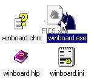
|
In Windows and on Mac the OS will issue a command to start an application with that document.
Up to now, WinBoard would always assume such a file was a game file, however, leading to error messages if it wasn't.
This because the OS is not smart enough to know which command-line arguments to use to tell WinBoard what kind of file it is.
Using the WinBoard installer would make the proper associations in the systems registry to load the files with WinBoard
in the proper way, so that you can even just double click them.
But for 'portable versions', it would be difficult to make such associations
using the standard system menus "Open with" and "Always open this type of file with this application",
because you could not specify a detailed command line for the "open" operation.
|
This has now been solved by making WinBoard pay attention to the filename extension.
When requested to perform an unspecified action on a file,
WinBoard (and XBoard, but this is in general less useful) will examine the extension.
Then for .fen or .epd it opens it as position file in viewer mode, and .trn as tourney file, to play the tourney.
A .ini or .xop file, specifying settings as a list of command-line options they contain,
will start WinBoard as if these options were typed on the command line (i.e. treat it as an indirection @file).
This means you can now start WinBoard in any pre-configured mode, by simply dragging an .xop file on top of it
(or double-clicking it once you made the association, as if they were shortcuts!).
Files with unrecognized extensions are still treated as game files, opening WinBoard in viewer mode
(if their name does not correspond to that of an installed ICS, see below).
WinBoard has a startup dialog where the user can select the engine or ICS he wants to use from a drop-down menu.
Through this menu he can select a command line that does not only specify the engine (or ICS),
but also all options that have to go with it.
(Like whether the ICS should use timeseal or timestamp, or the engine is for a variant or should use the GUI book, etc.)
In XBoard there was no such convenience, and you had not only to specify the engine (through the -fcp option) or ICS (through -icshost),
but also type all options it needed, (e.g. -icshelper timeseal), and even that it should run in ICS mode in the first place (-ics).
A few new options now have been added to cure this.
With -fe ENGINE or -se ENGINE you can now recall an 'engine profile' as was defined earlier through the Load Engine dialog,
accessing the engine by its nickname (i.e. the possibly shortened name under which it appears
in the list of engines from which you can select in the Load Engine or Tournament/Match Options dialog).
This then not only defines the corresponding -fcp or -scp argument, but also all option settings that were defined with it.
(Like whether the engine was UCI, needed to use book, plays only a certain variant,
or whatever you added by hand through editing the -firstChessProgramNames option in the ~/.xboardrc user settings file.)
A similar option -is ICSNAME works for selecting an ICS from the -icsNames option,
which can only be manipulated by editing the user settings file,
but is preconfigured to contain the the nicknames 'fics' and 'icc' for freechess.org and chessclub.com,
which likely is all you will ever need.
So "xboard -is fics" can now be used to connect to FICS with timeseal.
This can even abbreviated further:
When XBoard encounters an argument not preceded by an option name,
it normally assumes it is a game file, imagining the -lgf option for it.
But an exception is now made for names that correspond to the (nick)name of an ICS.
This would imply the -is option.
So you can connectto FICS by simply typing "xboard fics".
|
WinBoard supports user-supplied pieces through piece fonts, which are scalable to any board size.
In addition it is now possible to load bitmaps from an external file.
Because bitmaps are not scalable, this needs a separate set for each square size.
Like the built-in piece bitmaps, it furthermore needs three bitmaps per piece type:
outline (o) for the white pieces, solid (s) for the black pieces, and a mask (w) to indicate the interior.
A difference with the built-ins is that the solid and outline bitmaps can be in full color.
By specifying the folder containing the complete set of bitmaps with the -pieceImageDirectory option,
WinBoard can be made to use them.
Piece bitmaps in this format are available in the Alex Guerrero's WinBoard-Zeta distribution.
Missing bitmaps will automatically be replaced by built-ins.
The option -useBorder true|false can be used to switch a half-square-wide border around the board,
filled in from an external bitmap specified with the -border option.
Specifying a non-existing file will produce a border in the -whitePieceColor.
When a border is specified, the board coordinates will be drawn in that region.
|
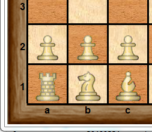
Using WinBoard Zeta's Maya pieces and Wood_2 border
|
|
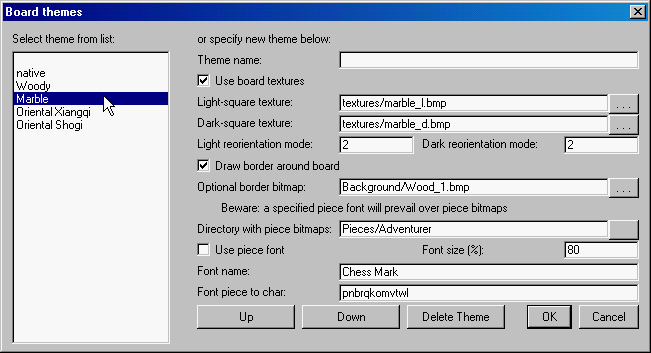
|
WinBoard now allows combinations of graphics settings to be stored and recalled as 'themes'.
A new menu dialog View -> Themes is added to control the settings for board and pieces
that are new, or could not be controlled by the View->Board dialog.
It also contains a 'Theme name' field, and by typing a name there,
the current graphics settings will be added as a theme with that name in the theme list,
displayed in the listbox on the left.
The settings can then be recalled at any time by double-clicking the theme name in that listbox.
The themes are stored as the -themeNames option in the settings file.
This is a multi-line option similar to the list of engines or ICS,
one line per theme, starting with the theme name,
and containing all option settings for that theme.
Only relevant options are included with the theme;
e.g. when the theme uses board textures, there is no need to store square colors.
|
It is now possible to 'compile' an opening book (in Polyglot format) from one or more game files.
A new menu item File -> Create Opening Book will add the positions (upto the given -bookDepth) of all games in the file
to a memory buffer.
After all games have been added, the buffer is saved as a Polyglot book of the name specified for GUI book.
The buffer is not cleared afterwards,
so this process could be repeated a number of times,
to accumulate the positions from several game files.
The importance of this feature is that it also works in any of the variants;
for Chess there already existed other oftware that could do this.
Another way to create or refine a book is by 'Monte-Carlo' game play.
With the option -mcBookMode the book-probing algorithm is altered:
probing is not done from a book file, but from the memory buffer that is used to create a book.
Games that are played are added to this memory buffer as soon as they finish.
Probing is done in a way to promote diversity,
although moves that on average produce better results are chosen much more frequently than moves with a poor performance record.
When the moves are played in the ratio they deserve, a book miss is reported, so that the choice is left to the engine.
This can then also provide moves that were so far not in the book.
By playing matches with randomizing engines,
or tourneys with many different, approximately equally strong engines in this mode,
a book can be built from scratch.
Of course these match and tourneys could use an arbitrary starting position.
After having collected enough games, a Polyglot book can be made from the resulting PGN file.
The Pause (P) button in the button bar, as well as 'Pause' menu item,
now also function when the engine is thinking.
The pause / resume commands defined in WB protocol will be used to suspend all activity of the engine
(be it thinking or pondering),
for engines that support those commands.
If the currently thinking engine doesn't support them,
the effect of pressing Pause will only commence once the engine moves.
The pondering engine will be suspended with the aid of easy / hard commands if it does not support pause / resume.
|
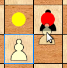
|
The graphics code of XBoard now has been re-written to us the Cairo graphics library.
Apart from being a huge cosmetic improvement, this change will affect the user in several ways.
For one, pixmaps (.xpm) and bitmaps (.bm) are no longer supported as formats for user-supplied piece images.
As a consequence the options -bitmapDirectory and -pixmapDirectory have been abolished.
The new XBoard supports two image formats: *.png and *.svg.
The user can specify a piece set of either format through the new option -pieceImageDirectory (short form: -pid).
The naming convention of the piece images has also been changed,
and the image files must now have names like WhiteBishop.png or BlackKnight.svg.
|
The SVG images are scalable, and this has opened the possibility to allow continuous resizing of the board window.
The Cairo library provides good anti-aliasing, and even PNG graphics can be resized to a certain degree before it starts to look ugly.
Note that the new XBoard no longer contains built-in piece images in its binary,
but relies on a default set of external piece images (stored with its data files) even when you don't specify a -pieceImageDirectory.
The Cairo library also supports transparency, and the background of the supplied piece images has to be fully transparent.
XBoard also uses trasparency when dragging pieces for entering moves to exclude from analysis;
in this case the 'ghost' of the piece that you are dragging will be redered semi-transparently.
The new source code can optionally be built using the GTK widget set in stead of the (by now very obsolete) Athena widget set.
A simple switch option during configure can be used to request this.
The only difference should be that the dialogs look prettier.
Note that the GTK build is still in an experimental stage,
and could contain many bugs and imperfections, including some things that are simply not implemented yet (such as key bindings).
This holds even for GTK builds made from versions for which the Xaw build is declared stable.
Some bugs were encountered and reported during the refactoring process,
and they were corrected on the spot.
In due time the fixes will find their way into the 4.6.x branch.
We can mention:
-
When, during install of a new engine, XBoard split the path name into directory + engine command,
it forgot to prefix the latter with './', so it would refuse to execute.
-
When replacing an engine while not at the end of a game,
the engine would be positioned at the end of the game, rather than on the current position.
-
Crazyhouse was played like Loop Chess when legality testing is off.
-
Attempting to load a non-existing engine makes XBoard switch to -ncp mode,
but this did require a bit of patience, as XBoard would still wait out the feature time-out of the engine load procedure.
-
Dragging the main window when the option -stickWindows was on could make xboard's clocks stop.
-
A work-around was implmented for the FICS bug that it does not understand proper SAN notation for moves like Bxc6 and bxc6.
This bug was interfering with XBoard 'Upload to Examine' function, which uploads in SAN.
-
The validity of tourney participants is now checked before you can OK the Tournament / Match Options dialog,
as they could have been invalidated by hand editing, which led to very pathologic effects during the tourney.
Some bugs disovered through scrutinous testing to insure the refactored code was still working as the original one,
but not yet solved:
-
Marking target squares and the highlight arrow interfere with animate dragging,
when the dragged piece oveshoots its target square so that it partly covers a marking dot
or arrow of a previous move. These are then not erased when the piece is released.
-
Iconizing the board still seems to sometimes stop the clocks.